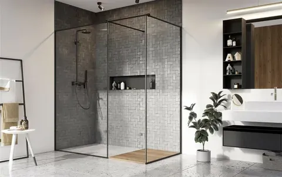

Душевые кабины из стекла

Душевые кабины из стекла – это идеальное решение для современных ванных комнат. Они придают помещению стильный вид, обеспечивая максимальный комфорт и долговечность. Компания ДизайнСтекло предлагает изготовление душевых кабин на заказ из прочного закалённого стекла.
Основное содержание
Мы изготавливаем душевые кабины различных размеров и конфигураций, что позволяет создавать индивидуальные проекты для каждого клиента. Кабины могут быть выполнены как с прозрачным, так и с матовым или тонированным стеклом.
Кабины из закалённого стекла устойчивы к воздействию влаги и температурных перепадов, они просты в уходе и служат долгие годы. Кроме того, мы предлагаем варианты с антивандальным покрытием, что делает их надёжным выбором для гостиниц и общественных душевых.
Преимущества душевых кабин из стекла:
- Долговечность — закалённое стекло устойчиво к воздействию влаги и температур.
- Эстетика — стеклянные кабины придают ванной комнате стильный и современный вид.
- Простота в уходе — поверхность стекла легко чистится и не требует особого ухода.
- Универсальность — возможны различные формы и размеры кабин под заказ.
Области применения:
- Квартиры и дома: стильные решения для ванных комнат.
- Отели и гостиницы: надёжные душевые кабины для номеров.
- Общественные учреждения: кабины для душевых помещений в фитнес-центрах и бассейнах.
Вывод
Компания ДизайнСтекло предлагает уникальные и качественные душевые кабины из стекла на заказ. Они украсят вашу ванную комнату и прослужат долгие годы.